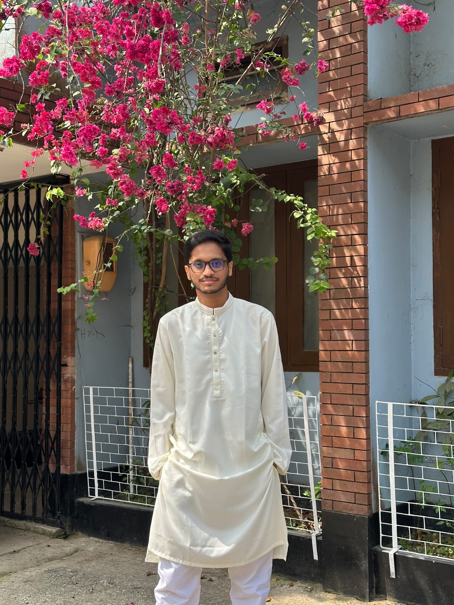
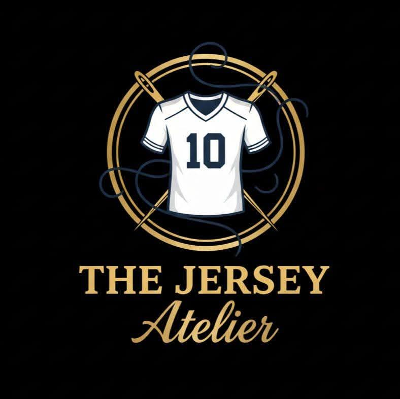

2028 · Expected Graduation
B.Sc. in Computer Science & Engineering
University of Asia Pacific
Department of Computer Science & Engineering · Currently in 3rd Year, 1st Semester
WELCOME TO MY PORTFOLIO
A Computer Science student who enjoys turning ideas into practical software while exploring technology, problem solving, and entrepreneurship.

ABOUT ME
My journey combines computer science with a hands-on entrepreneurial mindset.
I am Md. Ibtesam Rashid, a third-year Computer Science and Engineering student at the University of Asia Pacific. I enjoy using logic and coding to create software that can solve everyday problems.
I am continuously developing my skills in programming and exploring areas such as software engineering, web development, cybersecurity, data science, databases, networking, and competitive programming.
Alongside my studies, I run a small jersey business, The Jersey Atelier. This experience has helped me develop practical skills in order management, marketing, customer communication, social media, and delivery management.
I enjoy breaking problems into logical and manageable steps.
I value collaboration, communication, and learning from others.
I work to balance academic learning, projects, and entrepreneurship.
EDUCATION
Building a strong foundation in computer science and technology.
Department of Computer Science & Engineering · Currently in 3rd Year, 1st Semester
Completed Higher Secondary education before beginning my journey in Computer Science & Engineering.
Completed Secondary education and developed an early interest in technology and logical problem solving.
SKILLS
My current technical toolkit is focused on programming, development environments, and databases.
Programming
Programming
Programming
Programming
Development Tool
Development Tool
Database
Development Tool
AREAS OF INTEREST
PROJECTS
Academic projects that helped me turn programming concepts into practical applications.
MedPharma is a JavaFX-based application designed to support basic pharmaceutical and medicine-related management tasks. The project focuses on creating a user-friendly desktop interface and organizing information in a structured way. It helped me practice Java programming, GUI development, event handling, and application design. Through this project, I gained practical experience in turning a software idea into a functional desktop application.
This database project was designed to organize mosque-based zakat and charity collection and distribution activities. It manages information related to donors, donations, campaigns, beneficiaries, categories, mosque records, and distribution activities. The project helped me understand relational database design, tables, keys, relationships, and SQL queries. It also gave me practical experience in designing a structured database for a real-world community-focused system.
ENTREPRENEURSHIP
Combining technology, creativity, and practical business experience.

Football & Custom Jerseys
The Jersey Atelier is my small jersey business, focused on football and custom jerseys. Running this business alongside my university studies has given me valuable real-world experience beyond technical education.
CAREER GOALS
My goal is to become a skilled software engineer who can build reliable and useful software solutions. I want to strengthen my programming, problem-solving, and system design skills while exploring areas such as web development, cybersecurity, data science, databases, and networking.
At the same time, I want to keep developing my entrepreneurial mindset through practical business experience. In the long term, I hope to combine technology and business to create products and solutions that provide real value to people.
GET IN TOUCH
Whether you want to discuss technology, a project, or entrepreneurship, feel free to reach out.